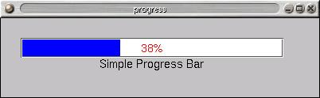

Class Hierarchy
Fl_Box
|
+----Fl_ProgressBox,
Include Files
#include <FL/Fl_ProgressBox.H>
Description
This is a simple "progress bar" that you can use to show the progress of lengthy operations.
You can use an arbitrary range, not just 0 to 100. You can also show (or not) the percentage
as text in the middle (and still display a normal widget label too).
Methods
Creates a new Fl_ProgressBox widget using the given position, size,
and label string. You probably don't want to put your label inside the box, since it's going to be
overridden when it gets drawn.
Get or set the minimum value of the range to be displayed.
Get or set the maximum value of the range to be displayed.
Set the position of the progress bar and redraw it. Poisition should be between the minimum and
maximum values.
Controls whether or not a percentage text is displayed within the bar. Text is displayed in
the textcolor() color.
Controls whether or not a percentage text is displayed within the bar. Text is displayed in
the textcolor() color.
Gets or sets the color of the text used to display the percentage text.